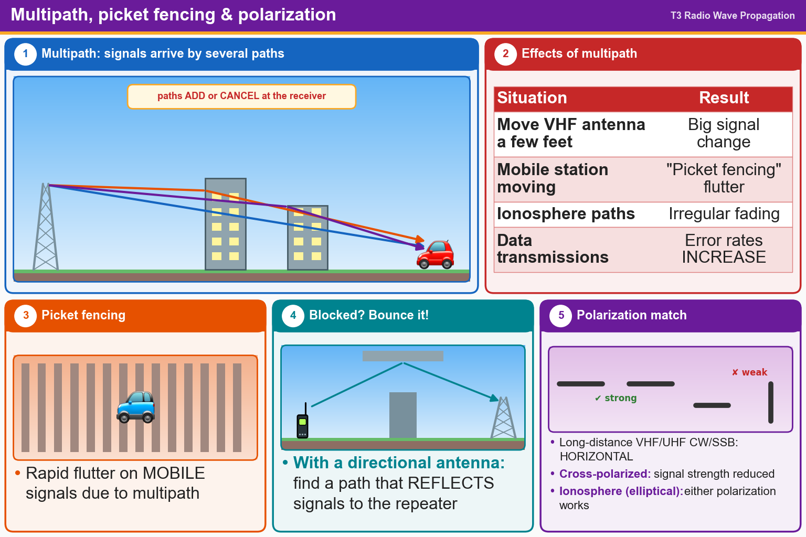

💡 Bounced signals add up or cancel. Match polarization; long-distance VHF/UHF SSB uses horizontal.
Press Check on any question to see if you're right (it won't show the answer), or Grade at the bottom to grade the whole page.
T3A01
Why do VHF signal strengths sometimes vary greatly when the antenna is moved only a few feet?
✘A.The signal path encounters different concentrations of water vapor
✘B.The Doppler effect causes slight frequency shifts which result in changes in signal strength
✘C.VHF ionospheric propagation is very sensitive to path length
✔D.Multipath propagation cancels or reinforces signals
T3A06
What is the meaning of the term “picket fencing”?
✘A.Interference from cable TV in the form of carriers at fixed intervals across the band
✘B.A type of ground system used with vertical antennas
✘C.Alternating transmissions during a net operation
✔D.Rapid flutter on mobile signals due to multipath propagation
T3A08
What is a likely cause of irregular fading of signals propagated by the ionosphere?
✘A.Intermodulation distortion
✘B.Interference from thunderstorms
✘C.Frequency shift due to Faraday rotation
✔D.Random combining of signals arriving via different paths
T3A10
What effect does multi-path propagation have on data transmissions?
✔A.Error rates are likely to increase
✘B.No significant changes will occur if the signals are transmitted using FM
✘C.Transmission rates must be increased by a factor equal to the number of separate paths observed
✘D.Transmission rates must be decreased by a factor equal to the number of separate paths observed
T3A05
When using a directional antenna, how might your station be able to communicate with a distant repeater if buildings or obstructions are blocking the direct line of sight path?
✘A.Try the long path
✔B.Try to find a path that reflects signals to the repeater
✘C.Change from vertical to horizontal polarization
✘D.Increase the antenna SWR
T3A03
What antenna polarization is normally used for long-distance CW and SSB contacts on the VHF and UHF bands?
✘A.Right-hand circular
✘B.Left-hand circular
✘C.Vertical
✔D.Horizontal
T3A04
What is the effect of antenna cross-polarization over a line-of-sight VHF or UHF path?
✘A.Modulation sidebands might become inverted
✘B.Signals have an echo effect
✘C.Nothing significant will happen
✔D.Received signal strength is reduced
T3A09
Which of the following results from the fact that signals propagated by the ionosphere are elliptically polarized?
✘A.FM voice is unusable
✔B.Either vertically or horizontally polarized antennas may be used for transmission or reception
✘C.Digital modes are unusable
✘D.Both the transmitting and receiving antennas must be of the same polarization